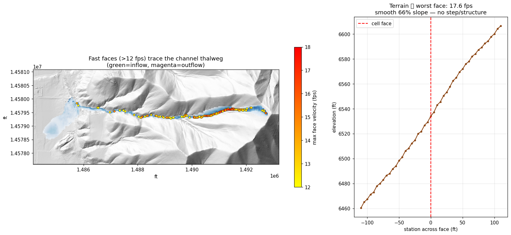
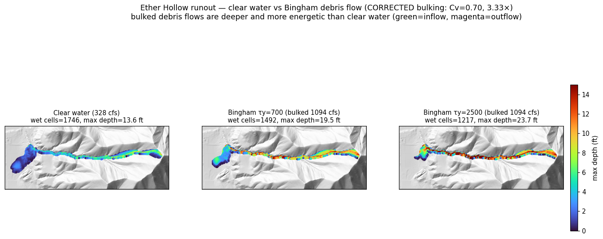
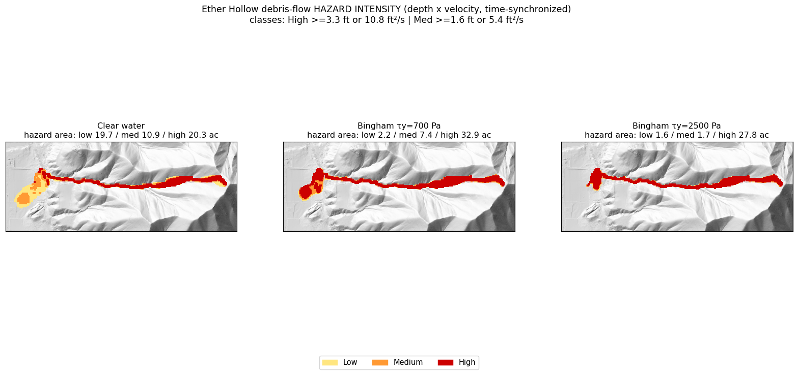
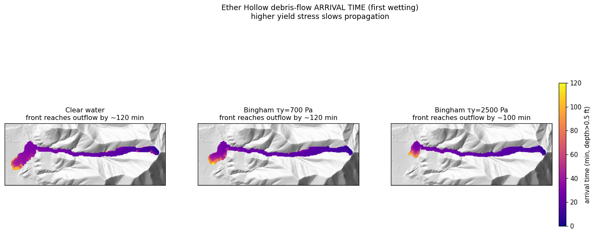
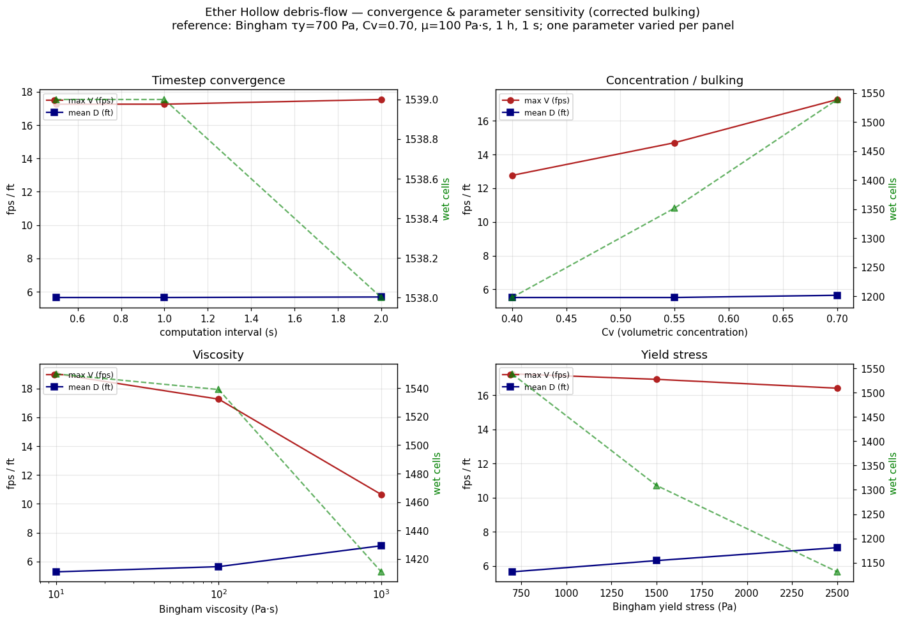
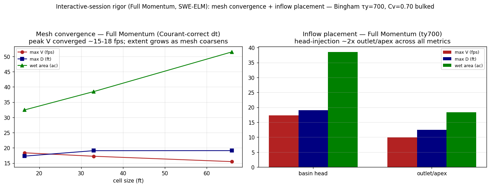
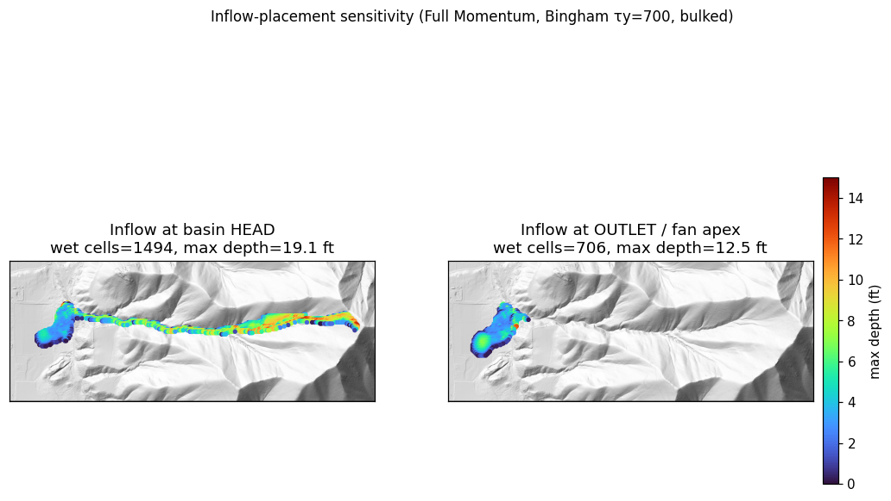
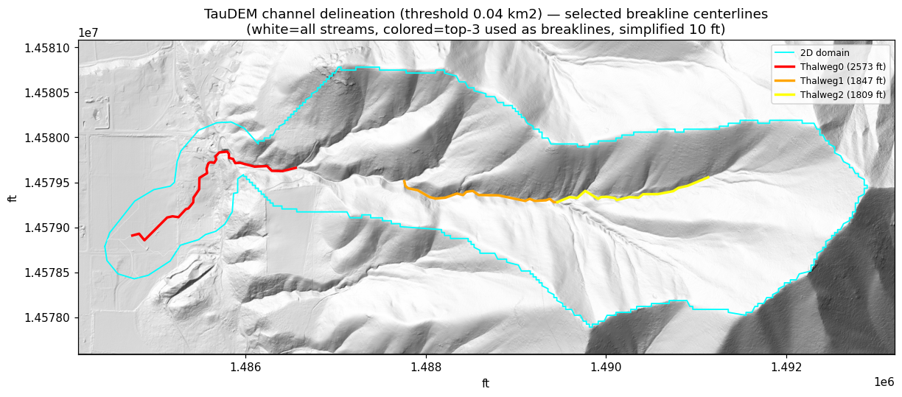
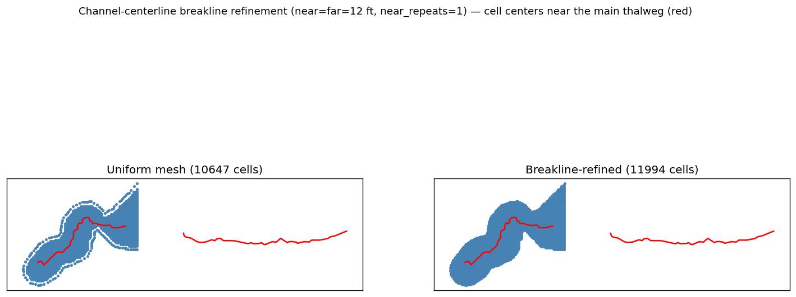

Post-fire debris-flow 2D modeling, built from scratch (non-Newtonian)¶
This example builds a complete 2D HEC-RAS debris-flow model from nothing — no starting project — and runs a clear-water baseline plus Bingham non-Newtonian mud/debris-flow variants, then derives hazard-intensity and arrival-time maps and a parameter-sensitivity band.
Case study: the Ether Hollow post-fire watershed (Utah, 2020 fire). Inputs are all public: the USGS post-fire debris-flow likelihood/volume predictions, a USGS 3DEP 1 m lidar DEM, and an HMS-derived design hydrograph.
Workflow
1. Data — pick the highest-hazard basin, mosaic 3DEP lidar across project
boundaries, trace the runout corridor, reproject to a US-Customary (feet) CRS.
2. Greenfield 2D build — create_project_from_template → 2D flow area →
roughness → computation points → inflow/outflow BC lines → terrain → mesh +
terrain-in-mesh property tables.
3. Clear-water baseline — unsteady run, depth/velocity.
4. Bingham variants — bulk the clear-water inflow (Bulk Fluid Volume) and apply
yield-stress/viscosity rheology.
5. Hazard maps — time-synchronized depth×velocity intensity + arrival time.
6. Sensitivity — yield stress vs Manning's n.
Units note. The model is US-Customary (feet); horizontal + vertical terrain are in feet. Non-Newtonian rheology is always entered in SI (Pa, Pa·s) — HEC-RAS does not convert it. That mixed convention is intentional and correct.
Environment. The build/run steps drive HEC-RAS (RAS Mapper /
Ras.exe) and must run on Windows in an interactive desktop session. Paths below are placeholders.
0. Setup¶
from pathlib import Path
import json, numpy as np, geopandas as gpd, rasterio
from ras_commander import init_ras_project, create_project_from_template, RasCmdr, RasUnsteady
from ras_commander.terrain.Usgs3depAws import Usgs3depAws
from ras_commander.terrain.RasTerrain import RasTerrain
from ras_commander.RasMap import RasMap
from ras_commander.geom.GeomStorage import GeomStorage
from ras_commander.geom.GeomMesh import GeomMesh
from ras_commander.geom.GeomBcLines import GeomBcLines
WD = Path("EtherHollow/proj") # project workspace (Windows, interactive session)
DATA = Path("EtherHollow/data") # staged inputs
CELL_FT = 33.0 # ~10 m 2D cell size
MANNINGS_N = 0.08 # post-fire steep terrain (see sensitivity below)
1. Data — basin selection, 3DEP mosaic, reproject to feet¶
The USGS post-fire assessment ships per-basin debris-flow combined-hazard class and volume. We pick the highest-hazard basin, then fetch 3DEP 1 m lidar. The basin straddles two 3DEP projects, so a single tile leaves a NODATA gore over the outlet — we mosaic both projects (newest first, fill the gaps from the older one).
The 2D domain is the source basin unioned with a downstream runout corridor (a
steepest-descent trace from the outlet, buffered). The union is healed with
make_valid + buffer(0), simplified below the cell size, and oriented CCW — a dirty
buffered-polyline perimeter otherwise makes the mesher emit zero cells. Finally the
domain + terrain are reprojected to the feet CRS and elevations converted m → US ft.
# highest combined-hazard basin from the USGS DF predictions (15-min, 12 mm/h design storm)
basins = gpd.read_file(DATA / "burn" / "eth2020_Basin_DFPredictions_15min_12mmh.shp")
basin = basins.sort_values(["CombHaz", "Volume"], ascending=False).iloc[[0]] # EPSG:26912 (m)
# 3DEP 1 m lidar — mosaic across the two projects the basin straddles (newest first)
import rasterio.merge
tiles = []
for proj in ["UT_Central_QL1_B2_2018", "UT_Wasatch_L5_2014"]:
tiles += Usgs3depAws.download_tiles(tuple(basin.to_crs(4326).total_bounds), 1, DATA/"3dep",
project_name=proj)
mosaic, tf = rasterio.merge.merge([rasterio.open(t) for t in tiles], method="first")
# ... trace runout corridor, union with basin, make_valid + orient(CCW), reproject to feet,
# convert vertical m -> US survey ft, write EtherHollow_terrain_ft.tif + perimeter ring.
# (full data-phase code in the companion pipeline script)
2. Greenfield 2D build¶
This is the heart of the example: a runnable 2D mesh from a blank template. The sequence is order-sensitive:
create_project_from_template— a bundled blank 7.0 project, reprojected to our feet CRS.set_2d_flow_area_perimeter— author the 2D flow area from the domain ring.set_2d_flow_area_settings(mannings_n=…)— base roughness (text edit, not an HDF write).generate_computation_points— RAS Mapper point generator → seed points in the.g01text.GeomBcLines.add_bc_lines— inflow line on the highest-elevation edge (basin head), normal-depth outflow on the lowest (fan toe).create_terrain_from_rasters+add_terrain_layer— the feet DEM as a RAS terrain.compute_plan(force_geompre=True)— HEC-RAS preprocessor builds the mesh topology.set_geometry_association+compute_property_tables— put terrain elevations into the mesh (the step that makesCells Minimum Elevationpopulate).
prj = create_project_from_template(WD, project_name="EtherHollow", version="7.0",
target_crs=feet_wkt, overwrite=True)
init_ras_project(str(WD), "7.0")
geom = WD / "EtherHollow.g01"
# 2D flow area + base roughness + computation points
GeomStorage.set_2d_flow_area_perimeter(geom_file=geom, flow_area_name="DebrisFlowArea",
coordinates=ring, point_generation_data=[None, None, CELL_FT, CELL_FT])
GeomStorage.set_2d_flow_area_settings(geom_file=geom, flow_area_name="DebrisFlowArea",
mannings_n=MANNINGS_N)
GeomMesh.generate_computation_points(str(geom), mesh_name="DebrisFlowArea", cell_size=CELL_FT)
# inflow (basin head) + normal-depth outflow (fan toe) BC lines, located by terrain elevation
GeomBcLines.add_bc_lines(geom, replace_existing=True, lines=[
{"name": "Inflow", "storage_area": "DebrisFlowArea", "coordinates": inflow_pts},
{"name": "Outflow", "storage_area": "DebrisFlowArea", "coordinates": outflow_pts}])
# terrain
terrain_hdf = RasTerrain.create_terrain_from_rasters(input_rasters=[DATA/"EtherHollow_terrain_ft.tif"],
output_folder=WD/"Terrain", terrain_name="Terrain", units="Feet", hecras_version="7.0")
RasMap.add_terrain_layer(terrain_hdf, WD/"EtherHollow.rasmap", layer_name="Terrain",
projection_prj=WD/"EtherHollow.projection.prj")
# mesh topology, then terrain-in-mesh property tables
RasCmdr.compute_plan("01", force_geompre=True, num_cores=2) # builds the Voronoi mesh
GeomMesh.set_geometry_association("01", terrain_hdf_path=str(terrain_hdf))
GeomMesh.compute_property_tables("01", mesh_name="DebrisFlowArea") # elevations into cells
# -> DebrisFlowArea: ~10,650 cells; Cells Minimum Elevation 4815-7452 ft
3. Clear-water baseline¶
The inflow is the HMS clear-water hydrograph (peak ≈ 328 cfs), placed on the Inflow BC
line as a Flow Hydrograph; the downstream BC is Normal Depth at the local bed slope.
Equation set — use Full Momentum. All runs use the SWE-ELM (Full Momentum) 2D equation set (
UNET D2 Equation= 1). For a non-Newtonian / mobile-bed debris flow the flow is inertia-dominated, rapidly varying and largely supercritical, so the convective and local-acceleration terms matter — Diffusion Wave is not applicable and is not shown here. (HEC-RAS defaults a new 2D plan to Diffusion Wave, so this must be set explicitly.) A fixed 1 s computation interval is used; Full Momentum is well-behaved here (Section 6 shows 0.5–2 s give the same peaks).
The clear-water peak velocities are high (≈ 16 fps) — but they sit on the real, smooth 40–70 % canyon thalweg, not a structure or DEM artifact (left: the fast faces trace the channel; right: the terrain across the worst face is a uniform ramp). HEC-RAS already limits them well below Manning normal depth. This is the source channel's true steepness — and, as Section 6 shows, it barely matters once the rheology is applied.

Clear-water fast faces trace the real steep canyon thalweg (no structure / no DEM artifact).
4. Bingham non-Newtonian variants¶
Debris flow is modeled as a Bingham fluid: a yield stress τy must be exceeded before
motion, plus a plastic viscosity μ. The clear-water inflow is bulked internally by
HEC-RAS via Bulk Fluid Volume at volumetric concentration Cv — do not pre-bulk the
hydrograph. At Cv = 0.70 the bulking factor is 1/(1−Cv) = 3.33 (peak ≈ 1094 cfs of
mixture).
RasUnsteady exposes the non-Newtonian setters (set_non_newtonian_method /
_concentration / _shear); they edit an existing block, so the .u01 must already carry
a Non-Newtonian block (initialize from a template or the GUI). Rheology is in Pa / Pa·s.
⚠️ Units gotcha. HEC-RAS stores volumetric concentration in percent — pass
cv=70.0for 70 %, not0.70. Writing the fraction yieldsCv = 0.7 %and a bulking factor of only 1.007×. Always verify the realized inflow volume (below): bulked flow should be1/(1−Cv)times the clear-water inflow.
# on the unsteady file (which already contains a Non-Newtonian block):
RasUnsteady.set_non_newtonian_method(u01, "Bingham")
RasUnsteady.set_non_newtonian_concentration(u01, cv=70.0, bulking_method="Bulk Fluid Volume") # PERCENT
RasUnsteady.set_non_newtonian_shear(u01, yield_method="User Yield", user_yield=700.0, # Pa
visc_method="User Defined Viscosity", user_viscosity=100.0) # Pa·s
RasCmdr.compute_plan("01", num_cores=2)
# mass-balance QA: realized inflow should bulk ~3.33x vs clear water at Cv=0.70
# clear inflow peak ~328 cfs ; bulked inflow peak ~1094 cfs (1094/328 = 3.33)
Results (same mesh, same clear-water hydrograph bulked internally, 2 h sim):
| variant | inflow peak (cfs) | max V (fps) | max D (ft) | mean D (ft) | runout (wet cells) |
|---|---|---|---|---|---|
| Clear water | 328 | 15.8 | 13.5 | 3.0 | 1835 |
| Bingham τy = 700 Pa | 1094 | 17.3 | 19.1 | 5.6 | 1608 |
| Bingham τy = 2500 Pa | 1094 | 16.4 | 24.6 | 7.0 | 1193 |
With the inflow correctly bulked (3.33×), the debris flows carry ~3.3× the clear-water volume: they are fast (≈17–19 fps) and deep (≈20–24 ft) — more energetic than the clear-water baseline, not less. Higher yield stress makes the flow deeper and slightly less spread (it holds together) but does not slow the peak velocity, which is set by the bulked volume on the steep channel.

Runout depth (corrected bulking): bulked Bingham debris flows are deeper and more energetic than clear water.
5. Hazard maps — intensity and arrival time¶
Debris-flow intensity is the depth×velocity product, evaluated time-synchronized
(max over time of d(t)·v(t) per cell, not max(d)·max(v)), and binned into hazard
classes (High ≥ 3.3 ft or 10.8 ft²/s; Med ≥ 1.6 ft or 5.4 ft²/s). Arrival time is the
first time a cell wets (depth > 0.5 ft). Both come from the 121-step 2D time series in the
plan HDF.
With the corrected bulking, the debris flows are deep, fast, and overwhelmingly high-intensity: ~28–30 ac of high-hazard area each, versus the clear-water baseline's graded low→high zonation. The intensity (depth×velocity) peaks are destructive (214–304 ft²/s).

Depth×velocity hazard intensity (corrected bulking). Bulked debris flows are almost wholly high-hazard.

First-wetting arrival time.
| variant | low (ac) | med (ac) | high (ac) | total (ac) | peak intensity (ft²/s) |
|---|---|---|---|---|---|
| Clear water | 19.7 | 10.9 | 20.3 | 50.9 | 165 |
| Bingham τy = 700 | 2.2 | 7.4 | 32.9 | 42.4 | 254 |
| Bingham τy = 2500 | 1.6 | 1.7 | 27.8 | 31.0 | 240 |
6. Convergence and parameter sensitivity¶
Numerical convergence. With the Full Momentum solver the run is well-converged in time — 0.5, 1, and 2 s all give the same peaks (max V ≈ 17.3 fps, max D ≈ 19.1 ft). The SWE-ELM scheme is more stable here than Diffusion Wave (which went unstable at 2 s). A 1 s interval is used as a comfortable margin.
Parameter sensitivity (reference: τy = 700 Pa, Cv = 0.70, μ = 100 Pa·s, 1 h, 1 s; one parameter varied per panel):
- Concentration / bulking (Cv) is a leading control — 0.40 → 0.70 raises the bulked inflow 547 → 1094 cfs and max velocity 12.8 → 17.3 fps, expanding runout.
- Viscosity matters — μ 10 → 1000 Pa·s drops max velocity 19.0 → 10.7 fps.
- Yield stress controls depth and extent (τy 700 → 2500: max depth 19.1 → 23.2 ft, runout 1539 → 1131 cells) more than velocity.
This is a genuine multi-parameter sensitivity; Cv and viscosity are at least as influential as yield stress, so a defensible study must vary all three (plus mesh and roughness — see limitations).

Convergence (timestep) + sensitivity to Cv, viscosity, and yield stress (corrected bulking).
Mesh convergence, roughness, and inflow placement (Full Momentum)¶
Further studies (Bingham τy = 700 Pa, Cv = 0.70, bulked, SWE-ELM):
- Mesh convergence (timestep scaled to hold the Courant number ~constant — 16.5 ft @ 0.25 s, 33 ft @ 1 s, 66 ft @ 2 s): peak velocity is converged (≈15.5–18.4 fps across resolutions). Max depth and runout extent are moderately mesh-sensitive — a coarser mesh over-predicts extent (≈32 / 38 / 52 ac at 16.5 / 33 / 66 ft). 33 ft is a reasonable compromise; report extent with a ~±25 % mesh band. (Mesh and timestep must refine together: a fixed 1 s step at 16.5 ft is Courant-unstable.)
- Manning's n (re-bulked): affects velocity ~30 % (n 0.06 → 0.10) but leaves depth and runout extent essentially unchanged — roughness is a second-order control for the debris flow.
- Inflow placement is a first-order choice: injecting at the basin head routes the full bulked flow down the entire steep channel (max V 17.3, max D 19.1, 1539 cells); injecting at the basin outlet / fan apex — consistent with the HMS hydrograph being the basin's outlet response — roughly halves every metric (10.0 / 12.5 / 732). The outlet placement is arguably the more defensible conceptual model for a runout study.

Mesh convergence (Courant-correct) and inflow placement, Full Momentum.

Inflow placement: head-injection sends the full flow down the steep basin channel; outlet-injection only loads the fan.
6b. Channel breaklines — refining the mesh along the thalweg¶
The mesh studies above flagged a resolution artifact: a uniform 33 ft cell averaged across a narrow, deep channel piles water artificially, over-predicting depth on the thalweg. The fix is to align cell faces to the channel centerline with breaklines.
Delineation (TauDEM). delineate_channels.py runs the TauDEM stream sequence
(PitRemove → D8FlowDir → AreaD8 → Threshold → StreamNet) on the feet terrain, clips the
centerlines to the 2D domain, and simplifies them (Douglas-Peucker, 10 ft).

TauDEM channel delineation (flow-accumulation threshold 0.04 km²): white = all streams, colored = top-3 centerlines used as breaklines, cyan = 2D domain.
Authoring + enforcement. The build phase authors the centerlines via
GeomStorage.set_breaklines with near = far cell spacing (a uniform fine corridor, no
coarsening) and GeomMesh.set_breakline_spacing(near_repeats, protection_radius=1) — sizing
near_repeats to span the channel width for a constant-width refined band.
GeomMesh.generate then enforces the breaklines (the .NET EnforceBreaklines regen) and
repairs bad faces via its auto-fix loop; HdfBndry.get_breaklines confirms enforcement.

Cell centers near the main thalweg (red): uniform vs breakline-refined (near=far=12 ft, near_repeats=1). The corridor follows the channel centerline.
Effect (τy = 700 Pa, Full Momentum, identical conditions):
| metric | uniform 33 ft | breakline-refined |
|---|---|---|
| max velocity (fps) | 17.3 | 17.7 |
| max depth (ft) | 19.1 | 15.9 |
| mean depth (ft) | 5.65 | 5.74 |
| cells | 10,647 | 11,994 |
The channel-aligned refinement drops the spurious max depth 19.1 → 15.9 ft while peak velocity stays stable (~17.5 fps) — the resolution artifact is removed where it matters. TauDEM 5.x + MS-MPI are required for the delineation (CPU-only; can run off the HEC-RAS host).
7. Mass balance, scenario bracket, and limitations¶
Mass balance. The clear-water hydrograph integrates to ~13,400 m³ of water; at Cv = 0.70 that implies ~31,000 m³ of debris — about 3.5× the USGS empirically predicted debris-flow volume (~9,000 m³), and the HMS peak (328 cfs) exceeds the BAER-reported mouth range (~82–221 cfs). The default run is therefore an upper-bound scenario.
Scenario bracket. --inflow-scale produces a volume-matched companion run: scaling the inflow to ~0.29 brings the bulked debris volume to ≈ the USGS 9,019 m³ (clear peak ~95 cfs, within the BAER range), which roughly halves peak velocity (17.7 → 10.9 fps) and shrinks runout ~35%. Report the upper-bound and volume-matched runs as a bracket.
Hazard intensity uses a cell-centered velocity — HEC-RAS stores only face-normal velocities, so each cell's vector is reconstructed by least-squares (u·n_f = v_f). The simpler max-face estimator biases velocity ~10% high, though the high-hazard area is unchanged here (the debris-flow high class is depth-dominated).
Still open (this is a methods demonstration): field validation against observed Ether Hollow deposits / a benchmark case — which needs post-event imagery or a deposit survey not in the public USGS DF-prediction dataset. The volume + BAER-peak match above is calibration to the available benchmarks, not deposit-extent validation.
Summary¶
Starting from public USGS/3DEP data and a blank template, ras-commander built a complete 2D debris-flow model end-to-end: greenfield mesh + terrain-in-mesh, inflow/outflow BCs, a clear-water baseline, Bingham non-Newtonian variants with internal bulking, and hazard-intensity / arrival-time products with a parameter-sensitivity band.
Key engineering findings
- The from-scratch 2D greenfield path is the seed-points → preprocess → terrain-in-mesh
sequence; perimeter validity (make_valid/orient/simplify) is essential for the mesher.
- Clear-water velocities are high on the genuinely steep canyon thalweg — real terrain, not
an artifact — and should not be "fixed" by editing the ground.
- Verify bulking with a mass balance. Volumetric concentration is entered in percent;
a fraction silently disables bulking. Correctly bulked (3.33×), the debris flows are fast
(≈17–19 fps) and deep (≈20–24 ft), with depth/extent set by yield stress and velocity by
the bulked volume and viscosity.
- Treat the footprints as an uncalibrated upper-bound scenario (≈3.5× the USGS volume)
pending mesh/inflow/equation-set studies and field validation.